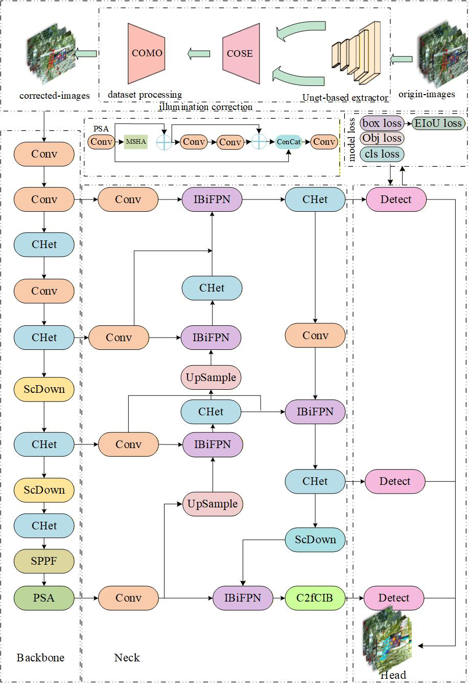
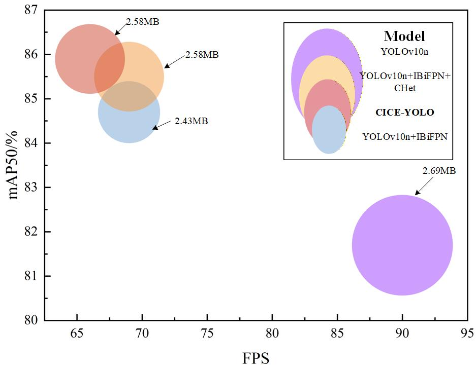

Ming Lu¹, Ricardo da Silva Torres², Fanjia Menga¹, Xin Wang¹
¹ China Agricultural University
² Wageningen University & Research
Tomato ripeness recognition in greenhouses is challenged by extreme illumination variations, including day and night conditions and supplemental lighting. By applying consistent preprocessing and enhanced multi-scale feature interaction, the model effectively localizes dense and occluded fruit clusters while maintaining high accuracy and real-time performance. It also generalizes well across tomato varieties, including yellow tomatoes.
In practical greenhouse harvesting scenarios, tomato picking robots face persistent perception challenges caused by extreme illumination variations between daytime and nighttime operation, widespread supplemental lighting, and local brightness inconsistencies. Existing tomato ripeness recognition models, typically developed under uniform lighting, fail to deliver reliable performance across the full range of real greenhouse environments.
To address this gap, we propose CICE-YOLO, a unified tomato ripeness recognition framework robust to daytime sunlight, nighttime conditions, and artificial supplemental lighting. This work represents the first systematic attempt to handle the large day-night illumination discrepancy within a single deployable model for greenhouse harvesting robots.

Figure 1: CICE-YOLO model architecture for tomato ripeness detection.
The approach is validated through extensive experiments in real greenhouse environments, including daytime, nighttime, and supplemental lighting scenarios.
Red tomato experiments confirm high accuracy under complex lighting and occlusion.
Table 1: Performance comparison of CICE-YOLO with mainstream detection models.
| Network | P (%) | R (%) | mAP50 (%) | F1 (%) | Model Size (M) |
|---|---|---|---|---|---|
| CICE-YOLO | 84.2 | 79.6 | 85.9 | 82.0 | 6.2 |
| YOLOv10n | 81.3 | 76.9 | 81.7 | 79.0 | 5.8 |
| YOLOv10s | 81.4 | 80.1 | 82.3 | 80.0 | 16.5 |
| YOLOv8n | 75.9 | 77.7 | 78.7 | 77.0 | 6.2 |
| YOLOv8s | 80.5 | 80.1 | 81.6 | 80.0 | 22.5 |
| SSD | 81.5 | 67.6 | 78.7 | 73.6 | 23.8 |
Additional experiments on yellow tomato greenhouses demonstrate the model’s generalization capability across varieties with different color distributions.
Table 2: Experimental results of different networks on dataset2 (tomato ripeness detection).
| Network | P (%) | R (%) | mAP50 (%) | F1 (%) |
|---|---|---|---|---|
| original-dataset2-YOLOv10n | 59.9 | 59.5 | 59.2 | 55.0 |
| illumination-corrected-dataset2-YOLOv10n | 64.9 | 72.7 | 70.1 | 68.0 |
| original-dataset2-CICE-YOLO | 65.5 | 75.0 | 69.9 | 69.0 |
| illumination-corrected-dataset2-CICE-YOLO | 71.4 | 76.8 | 76.3 | 73.0 |
Computational efficiency and resource consumption are analyzed, with targeted optimizations ensuring suitability for real-time robotic deployment.

Figure 2: Comparison of parameters, mAP50, and FPS among YOLOv10n, YOLOv10n + IBiFPN, YOLOv10n + IBiFPN +CHet and CICE-YOLO
Public Release: A comprehensive greenhouse dataset covering all lighting scenarios for red and yellow tomatoes, along with trained detection models, is provided to support reproducibility and future research in agricultural vision under challenging illumination conditions.
@article{Lu2026CICEYOLO,
title={CICE-YOLO: An improved YOLO-based network for tomato ripeness detection in Greenhouse},
author={Ming Lu, Ricardo da Silva Torres, Fanjia Menga, Xin Wang},
journal={},
year={2026}
}
This project is released under the MIT License.